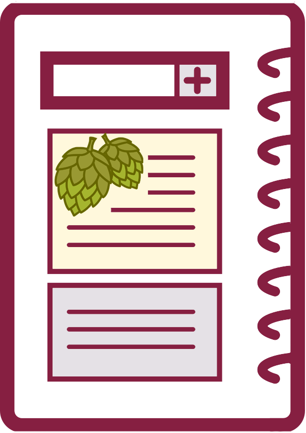

In this course, you will compose a series of documents that focus on analyzing, using, and improving technical documents. This sequence of projects will be your focus for the term.
Analyze Resources in Your Field
 You will find out about some of the types of writing produced by those who work in your field by identifying and analyzing websites a student in your field would use while studying at Virginia Tech.
You will find out about some of the types of writing produced by those who work in your field by identifying and analyzing websites a student in your field would use while studying at Virginia Tech.
You will record the details you find in a table that lists the writing type, its purpose, its audience, its medium (how it is usually delivered), and its average length. Finally, you will compose a cover memo summarizing your findings.
Revise User Documentation
You will revise real-world user documentation in order to improve its usability. In other words, you will use plain language and document design principles to make the existing document easier for readers to use as they complete the task it focuses on.
You will discuss the changes you make to the user documentation in a reflection memo. Your memo will analyze the user document you revised and the changes you made to it in order to improve its usability.
Pitch Your Report Topic in a Group Proposal
 You and the members of your group will write a proposal for the site you will focus on for your project management projects in the course. Each group member will share their Usability Revision and Reflection with the members of your group, and then the group will choose one of the sites to focus on.
You and the members of your group will write a proposal for the site you will focus on for your project management projects in the course. Each group member will share their Usability Revision and Reflection with the members of your group, and then the group will choose one of the sites to focus on.
In addition to pitching the site you choose, your proposal will provide a schedule for your work, including plans for group meetings and draft deadlines. It will also identify the responsibilities of all group members.
Report on Your Group’s Progress
You and the members of your group will assess your work on the recommendation report and compare your progress to the information you included in your proposal.
You will explain the work that the group has completed and the information that you have collected so far. You will include a Gantt Chart that updates your group schedule for the rest of the term.
Make Your Recommendation
You and the members of your group will write a recommendation report that analyzes the usability of a website that a Virginia Tech student would use in the course of their academic work at the university.
You will include customary sections (e.g., intro, methods, results, conclusions, and recommendations), along with front and back matter. Your report will probably be 10–15 pages long, including all sections.